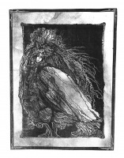

Графіка
Перевальський Василь
Перевальський Василь Євдокимович (13 червня 1938, с. Бубнів) — український художник-графік. Член-кореспондент Національної академії мистецтв України (2001). Народний художник України(1999). Доцент (2003). Лауреат літературно-мистецької премії ім. І. Нечуя-Левицького (1993).
Василь Перевальський народився 13 червня 1938 року в с. Бубнів Золотоніського району Черкаської області.
У 1965 році закінчив Київський державний художній інститут, де вчився у В. Касіяна, 1965–1967 — у творчих майстернях Академії мистецтв СРСР у М. Дерегуса.
У 1970–1975 роках працював художнім редактором видавництва «Мистецтво» та головним художником видавництва «Радянська школа» (тепер «Освіта»).
З 1987 по 1991 рік обіймав посаду секретаря Національної спілки художників України. У 1997–1998 роках — заступник голови Київської організації НСХУ, у 2000–2005 роках — заступник голови НСХУ.
У 1967–1969 роках викладав у Київському художньо-промисловому технікумі. З 1991 року почав викладати в Національному технічному університеті України «КПІ», завідував кафедрою графіки видавничо-поліграфічного факультету.
З 2003 року викладає у Національній академії образотворчого мистецтва і архітектури, з 2004 року — завідує там кафедрою графічних мистецтв.
Василь Перевальський працює в галузі книжкової і станкової графіки та живопису. З 1963 року співпрацював із провідними видавництвами України, виконував оформлення та ілюстрації до книжкових видань. Василь Перевальський є також автором багатьох екслібрисів (для В. Вітрука (1966), В. Стеценка (1966), В. Турянчика (1966), В. Житника (1966), І. Крип'якевича (1967), А. і Ф. Глущуків (1968)) та станкових гравюр. У1991–1992 роках входив до складу колективів з розробки ескізів банкнот номіналом 1 гривня, 5 гривень та 10 гривень.
Ірина Мохова
Мохова Ірина Володимирівна
Народилась в 1981р. у м.Суми
Навчалась:
З 1993 по 1996г. в Детячій художній школі м.Суми.
З 1997 по 2001г. в Сумскому училищі мистецтв і культури ім.Д. Бортнянського,
факультет декоративно-прикладного мистецтва.
З 2003г. студентка Видавничо полиграфічного інституту,
факультет книжкова графіка.
Брала участь у виставках:
виставки декоративно-прикладного мистецтва (м.Суми)
2004г. молодіжна виставка Спилки художників України (г. Киев)
2007г. виставка "Таланти КПІ" (м. Київ)
2008г. виставка "Рибний день" галерея Ірена (м. Київ)
|  |
Ярослав Ціко
Ярослав Ціко. Горянин. Народився 23 травня 1964 року в містечку Славсько, що на Львівщині.
Закінчив місцеву середню школу та Львівський політехнічний інститут. Архітектор за фахом, художник за покликанням.
На персональній виставці у Харківському художньому музеї Учасник різноманітних художніх виставок, в тому числі персональних — у Снятині, Івано-Франківську, Львові, Чернівцях, Коломиї, Харкові, в Українському культурному Центрі, Всеросійському музичному товаристві та Болгарському Центрі культури (Москва, Росія), в Центральному Будинку художника Росії, Московському Будинку націй. Брав також участь у міжнародній художній виставці "Слов'янське братерство" (Москва) та в Центральному Будинку культури російської армії (Москва).
Член Міжнародного художнього фонду. Входить до Співдружності художників "Соло" м. Москви, член Спілки українців діаспори м. Москви "Ноосфера — Радонеж". Його полотна зберігаються у різних приватних колекціях шанувальників малярства в Україні, США, Японії, Німеччині. Китаї, Югославії, Польщі та в багатьох інших країнах світу. У творчому саморозвитку відвідав Німеччину і Польщу. Останнє десятиріччя переважно працював у Москві, а снаги для творчості черпає у Карпатах, які безтямно любить, і в рідних сторонах, про що свідчать його останні виставки на терені Західної України.
Трудоголік. Працює по п'ятнадцять годин на добу. Пише, як правило, під улюблені мелодії французів Дебюссі, Равеля, Мессіана. Еріка Клептона, гурту "Пінк Флойд". Потужним каталізатором творчості є і музична класика: Бах. Бетховен, Шопен. Боготворить Франка, який возвеличував "дух, що тіло рве до бою". Своїм художнім прозрінням завдячує нені — надзвичайній майстрині-вишивальниці, котра відкрила йому художню красу народного мистецтва і природи Карпат та стала найсильнішим креативним поштовхом — першопочатком. Сам вишивав нитками на полотні різними техніками.
 |
Ярослав Ціко — художник-портретист, художник-пейзажист, художник-абстракціоніст. Та найбільше майстер відомий як автор психологічних образів-портретів. Незабутні враження залишає тонка пастельна техніка, у якій виконана ціла галерея людських обличь. В них ніжність і витонченість так званого пастозного академічного живописного портрета разом із класичним чорно-білим стилем, де ефект світлотіней додає лініям змальованих натур глибокого внутрішнього змісту.
Ярослав Ціко належить до художників, сформованих в українському мистецтві:"Вдихнути в портрет життя - в цьому, безумовно, одне з найважливіших завдань портретиста!"
Що ще цікаво: він легко поєднує штучну абстракціоністську манеру з чистим реалізмом, а це — свідчення професійної зрілості. Невпинно пошукуючи нові форми, методи, стилі, техніки, художник вивершує і вишукує оригінально свою манеру письма, що вигідно вирізняє його серед інших майстрів.
Назад Вгору